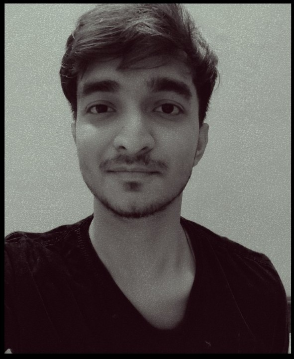

Full-Stack Web • AI Intelligence • Data Analytics
Designed and developed a full-stack platform featuring bespoke UI/UX layouts and custom asset generation.
Engineered an automated peer review solution for the Town of Innisfil's Engineering department.
Machine learning model built to analyze spectral features and accurately classify synthetic audio patterns.
Architected a scalable digital platform prioritizing seamless connectivity and dynamic data flow.
Deploying full-stack web platforms and custom AI automation for global clients.
Managed high-volume business records and resolved operational inefficiencies through data analytics.
Oversaw logistics, managed inventory ensuring seamless delivery and scaling operation.
My architectural approach to software is rooted in the fundamental sciences. With a deep academic background in Physics and Mathematics, I developed a natural fluency in deconstructing complex, systemic problems into elegant, logical frameworks.
Programming became the bridge between theoretical mathematics and tangible creation. I realized that the exact same principles governing astrophysics and advanced calculus could be applied to architecting scalable, high-performance digital environments.
Today, I view Artificial Intelligence not as a final destination, but as the ultimate catalyst. My focus is on contributing to the evolution of AI to accelerate humanity’s understanding of the fundamental sciences—specifically theoretical physics, mathematics, and astronomy.
We are approaching a threshold where AI will act as the ultimate computational cipher, unlocking and decoding the deepest secrets of the universe. I am building in this space because I intend to be at the forefront when that paradigm shifts, actively engineering the systems that will redefine our reality.
Graduated with Distinction in Big Data Analytics. Currently specializing in Artificial Intelligence.
Graduated with Distinction. Astrophysics research intern at IIT Bhubaneswar.
agh...I see you've come this far, so let's
Connect —